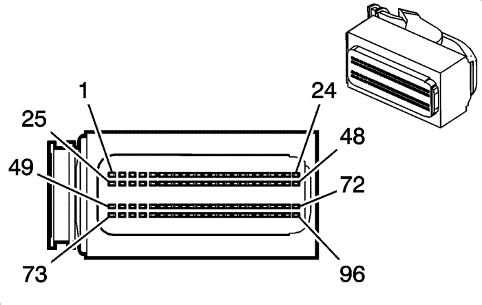

Captiva |
||||||||
|
|
|
|||||||
|
 |
Información de parte de conector
| Información de parte de terminal
|
Bulón | Tamaño | Color | Circuito | Función | Opción |
|---|---|---|---|---|---|
1-2 | -- | -- | -- | No se utiliza | -- |
3 | 0,75 | PK | 5425 | Tensión de alimentación de la válvula de inyección de combustible (4) | -- |
4 | 0,75 | L-BU | 6289 | Señal del sensor de temperatura del aire de inducción | NT4 o NE9 |
5 | 0,5 | TN | 3657 | Sensor de temperatura de los gases de escape | NT4 o NE9 |
6 | 0,75 | BN | 6782 | Referencia baja del sensor de temperatura 1 de los gases de escape | NT4 o NE9 |
7 | 0,5 | BN/WH | 6783 | Referencia baja del sensor de temperatura 2 de los gases de escape | NT4 o NE9 |
8 | 0,5 | D-BU | 6053 | Señal del sensor de presión de escape (1) | NT4 o NE9 |
9 | 0,5 | YE | 410 | Señal del sensor de temperatura del refrigerante del motor | -- |
10 | 0,5 | YE | 1578 | Señal de temperatura del combustible | -- |
11 | 0,5 | YE | 5947 | Señal del sensor de posición del turbo del difusor variable | -- |
12 | 0,5 | WH | 1533 | Señal del sensor de presión de sobrealimentación | -- |
13 | -- | -- | -- | No se utiliza | -- |
14 | 0,5 | GY | 7314 | Señal del sensor de posición de la válvula de turbulencia variable | -- |
15 | 0,5 | D-GN | 485 | Señal del sensor de posición del acelerador (1) | -- |
16 | 0,5 | TN/BK | 456 | Control del indicador de palanca de cambio | -- |
0,5 | YE | 6111 | Señal del sensor de accionamiento del embrague | -- | |
17 | 0,5 | YE | 5361 | Señal del sensor de aplicación del freno | MHC |
18 | -- | -- | -- | No se utiliza | -- |
19 | 0,5 | OG/BK | 2919 | Referencia baja del sensor de presión del tubo de distribución de combustible | -- |
20-21 | -- | -- | -- | No se utiliza | -- |
23 | 0,5 | L-GN | 5378 | Sensor de temperatura de los gases de escape (3) | NT4 o NE9 |
24 | 0,5 | L-BU | 5377 | Sensor de Temperatura de los Gases de Escape (2) | NT4 o NE9 |
25 | 0,75 | L-BU/BK | 844 | Control del inyector de combustible (4) | -- |
26 | 0,75 | TN | 1744 | Control del inyector de combustible (1) | -- |
27 | 0,75 | OG | 5421 | Tensión de alimentación de la válvula de inyección de combustible (1) | -- |
28-29 | -- | -- | -- | No se utiliza | -- |
30 | 0,5 | GY | 1716 | Referencia baja del sensor de picado (1) | -- |
31 | 0,5 | D-BU | 496 | Señal del sensor de picado (1) | -- |
32 | 0,5 | L-BU | 1876 | Señal del sensor de picado (2) | -- |
33 | 0,5 | GY | 2303 | Referencia baja del sensor de picado (2) | -- |
34 | 0,5 | GY | 5641 | Señal de temperatura del sensor de presión de sobrealimentación | -- |
35 | 0,5 | YE | 2918 | Señal de sensor de presión de tubo de distribución de combustible | -- |
36-37 | -- | -- | -- | No se utiliza | -- |
38 | 0,5 | TN | 2917 | Referencia de 5 voltios del sensor de presión del tubo de distribución de combustible | -- |
39 | 0,5 | L-GN | 2867 | Tensión de alimentación del sensor de posición del cigüeñal | -- |
40 | 0,5 | OG/VT | 7376 | Tensión de alimentación de 5 V del sensor de posición del árbol de levas | -- |
41 | 0,5 | D-BU | 5639 | Referencia de 5 voltios del sensor de presión de sobrealimentación | -- |
42 | -- | -- | -- | No se utiliza | -- |
43 | 0,5 | PK/WH | 3594 | Tensión de señal de solenoide en remolino eléctrico | -- |
44 | 0,5 | YE/BK | 6055 | Referencia baja del sensor de presión de escape (1) | NT4 o NE9 |
45 | 0,5 | TN | 2761 | Referencia baja del sensor de temperatura del refrigerante | -- |
46 | 0,5 | BN | 6062 | Referencia baja del sensor de temperatura del combustible | -- |
47 | 0,5 | PK/BK | 632 | Referencia baja del sensor de posición del árbol de levas | -- |
48 | 0,5 | OG/BK | 5929 | Referencia baja del sensor de posición del turbo del difusor variable | -- |
49 | -- | -- | -- | No se utiliza | -- |
50 | 0,75 | YE | 5422 | Tensión de alimentación de la válvula de inyección de combustible (2) | -- |
51 | 0,75 | PU | 5423 | Tensión de alimentación de la válvula de inyección de combustible (3) | -- |
52 | 0,5 | OG/BK | 1786 | Señal de estacionamiento/punto muerto de la transmisión (1) | MHC |
53 | -- | -- | -- | No se utiliza | -- |
54 | 0,5 | GN | 6935 | Señal de ajuste de corriente de la sonda Lambda calentada | NT4 o NE9 |
55 | 0,5 | BN/WH | 6933 | Señal de la bomba de corriente de la sonda Lambda calentada | NT4 o NE9 |
56 | 0,5 | YE/GR | 6936 | Señal del colector de la sonda Lambda calentada | NT4 o NE9 |
57 | 0,5 | BN | 6934 | Sensor común de oxígeno calentado | NT4 o NE9 |
58 | 0,5 | YE | 492 | Señal del sensor de flujo de masa de aire | -- |
59 | 0,5 | BN/WH | 633 | Señal del sensor de posición del árbol de levas | -- |
60 | 0,5 | YE | 573 | Señal del Sensor de Posición del Cigüeñal (1) | F46 |
61 | 0,5 | TN | 5928 | Referencia de tensión del sensor de posición del turbo del difusor variable | -- |
62 | -- | -- | -- | No se utiliza | -- |
63 | 0,5 | GY | 416 | Referencia de 5 voltios del sensor de posición del acelerador | -- |
64 | 0,5 | GY | 2702 | Referencia de 5 voltios de recirculación de gases de escape (2) | -- |
65 | 0,5 | GY | 2093 | Alimentación de referencia de 5 V del interruptor economizador | MHC |
66 | 0,5 | GY | 6054 | Referencia de 5 voltios del sensor de presión de escape (1) | NT4 o NE9 |
67 | 0,5 | BN | 5638 | Referencia baja del sensor de presión de sobrealimentación | -- |
68 | -- | -- | -- | No se utiliza | -- |
69 | -- | BK | 7315 | Masa del sensor de posición de la válvula de turbulencia variable | -- |
70 | 0,5 | TN | 2752 | Referencia baja de sensor de posición de mariposa | -- |
71 | 0,5 | TN | 2760 | Referencia baja del sensor de temperatura del aire de entrada | -- |
72 | 0,5 | TN | 2753 | Referencia baja del sensor de recirculación de los gases de escape | -- |
73 | -- | -- | -- | No se utiliza | -- |
74 | 0,5 | L-GN/BK | 1745 | Control del inyector de combustible (2) | -- |
75 | 0,5 | PK/BK | 1746 | Control del inyector de combustible (3) | -- |
76 | -- | -- | -- | No se utiliza | -- |
77 | 0,75 | BK | 2929 | Control del medidor de combustible de la válvula de inyección de combustible | -- |
78 | 0,5 | PU | 6304 | Señal de aplicación del pedal del freno | -- |
79 | 0,5 | GY | 23 | Señal de ciclo de servicio inductor del generador | -- |
80 | 0,5 | OG | 225 | Señal de activación del generador | -- |
81 | -- | -- | -- | No se utiliza | -- |
82 | 0,5 | GY/WH | 3113 | Control bajo del calentador del sensor de oxígeno calentado, banco 1, sensor (1) | -- |
83 | 0,75 | GY | 561 | Referencia baja del motor del relajador del acelerador | -- |
84 | 0,75 | BK | 560 | Toma de tierra | -- |
85 | 0,5 | D-GN | 335 | Control del relé del ventilador de refrigeración de baja velocidad | -- |
86 | 0,75 | GY | 435 | Control del solenoide de recirculación de gases de escape | NT4 o NE9 |
87 | 0,5 | PU | 574 | Referencia baja del sensor de posición del cigüeñal (1) | -F46 |
88 | 0,75 | WH | 5931 | Señal baja del solenoide turbo de boquilla variable | -- |
89 | 0,75 | L-GN | 7316 | Señal de control de la válvula PWM de turbulencia variable | -- |
90 | 0,75 | OG | 5764 | Señal alta del motor de la válvula de recirculación de gases de escape | -- |
91 | 0,75 | L-GN/WH | 5746 | Señal baja del motor de la válvula de recirculación de gases de escape | -- |
92-93 | -- | -- | -- | No se utiliza | -- |
94 | 0,5 | PK/WH | 2092 | Señal del interruptor economizador | MHC |
95 | 0,5 | YE/BK | 508 | Control del indicador de agua en el combustible | -- |
96 | 0,5 | TN/BK | 231 | Señal del interruptor de presión de aceite | -- |
| © Copyright Chevrolet Europe. All rights reserved |